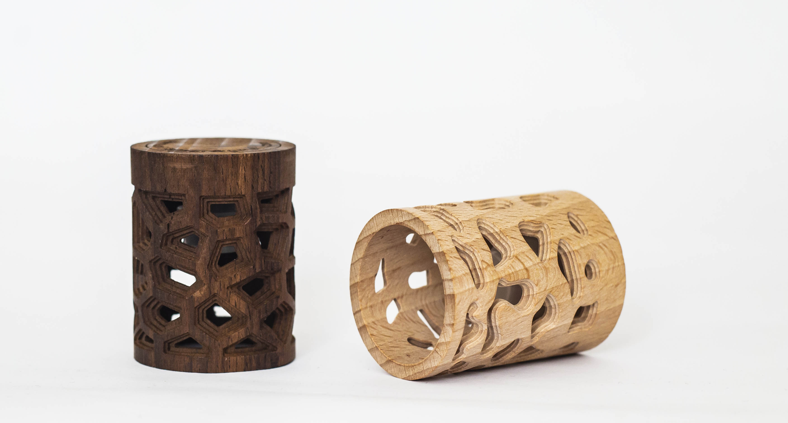
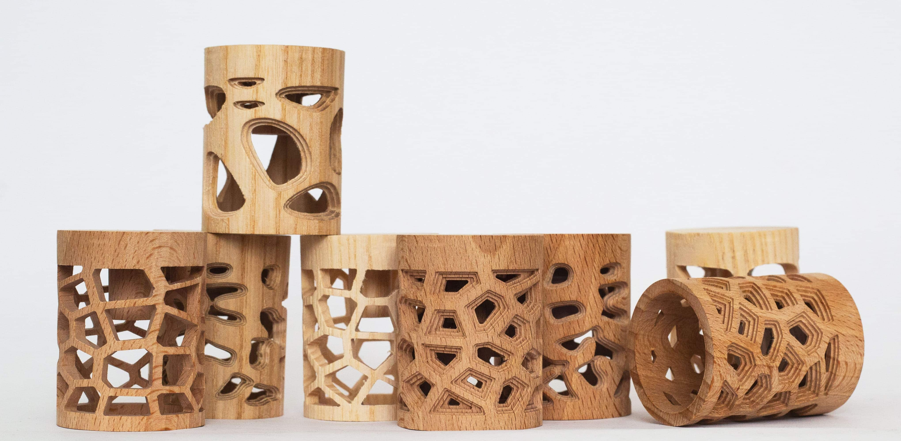
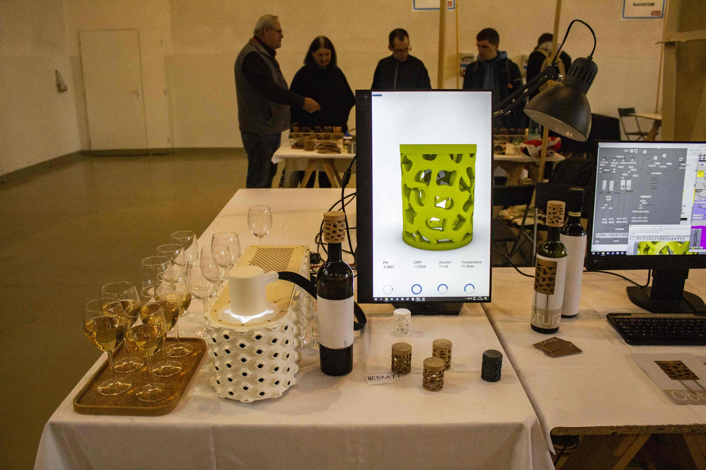
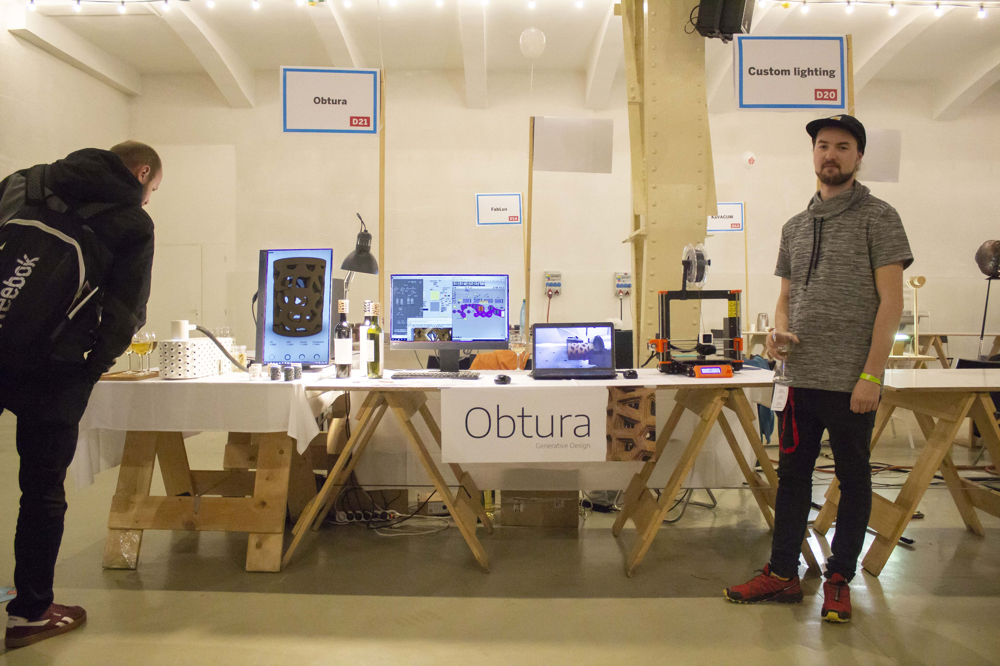
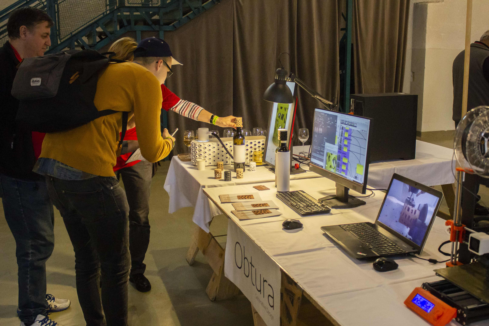

Technológia
Projektom Obtura skúmam prepojenie uzatváracieho objektu so
samotným obsahom fľaše. Snažím sa vysvetliť, čo pre mňa
ako konzumenta a dizajnéra znamená víno a ako vnímam obal,
ktorý sa v tomto koncepte snaží vyjadriť samotnú hodnotu obsahu.
Samotný dizajn uzáveru je koncipovaný ako objekt
reflektujúci obsah fľaše. Pomocou senzorického systému,
merajúceho chemické parametre vo víne, sa parametrická štruktúra
pretransformováva a vzniká jedinečná štruktúra, ktorá je
charakteristická pre každú vzorku vína.
Týmto mechanizmom sa generuje samotný vzor tvoriaci hlavný
dizajnový prvok. Parametrická štruktúra interpoluje s nameranými
chemickými hodnotami vo víne.



